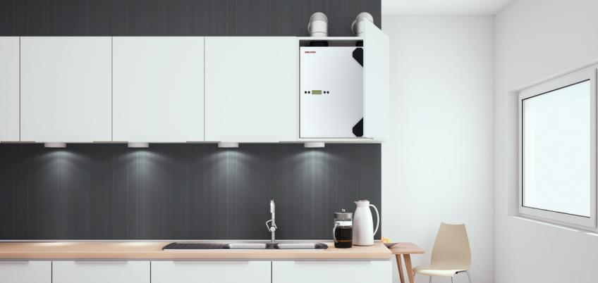
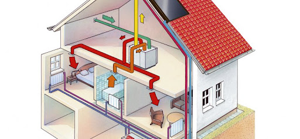

Ventilasjonssystemer
Avanserte ventilasjonssystemer – mer enn bare luftutveksling.
Avanserte ventilasjonssystemer sikrer regelmessig luftutveksling uten å kaste bort verdifull energi.

Ventilasjon Lukkede rom krever regelmessig tilførsel av frisk luft.
Minimumskravet for timeluftveksling er 0,4 ganger volumet på rommet.
Mugg Mangel på ventilasjon øker den relative fuktigheten i rommet. Resultatet er fuktskader og muggvekst.
Energiforbruk Å bruke vinduer for å ventilere kalles naturlig ventilasjon. Forårsaker tap av ca. 50% av varmeenergi gjennom vinduer og infiltrasjon. Det er som å kaste penger ut av vinduet!
Trange bygninger Tette bygg og lufttette vinduer reduserer strømregningene betydelig, men reduserer også luftvekslingshastigheten betydelig.
Hvorfor er ventilasjon så viktig?

På grunn av den praktiske termiske isolasjonen er moderne hus i dag så tette at det i teorien er ingen energitap. Spesielt har lavenergihus
et tett bygningsbelegg, som primært forhindrer varmetap. Det forhindrer også naturlig utveksling av luft og gjør mekanisk ventilasjon
nødvendig. Ventilasjon er imidlertid også et problem i eldre hjem. Som følge av etterfølgende varmeisolasjonstiltak, er det ofte ikke lenger
nok utelufttilførsel gjennom hull og andre tidligere luftgjennomtrengelige steder. Dette skaper en interessekonflikt mellom praktisk
varmeisolasjon og etterspørselen etter frisk luft, som kan løses med mekaniske ventilasjonssystemer.
Ulike ventilasjonssystemer
Sentralisert ventilasjon: behagelig frisk luft overalt.

For sentrale ventilasjonsaggregater skilles det mellom eksos- og forsynings / eksosanlegg: Det enkleste og mest kostnadseffektive systemet
for sentralisert mekanisk ventilasjon er eksosanlegget. Brukt luft fjernes gjennom kanaler fra avtrekksluftområder som kjøkken, bad og
toalett. Samtidig forårsaker det resulterende vakuumet at frisk luft trekkes gjennom åpningene på uteluften direkte inn i tilluftsrommene
(stue, soverom). Mengden avtrekksluft fra avtrekksluftområdene avhenger av viftens ytelse. Beboere kan justere luftstrømmen etter deres
behov ved hjelp av en enkel trinnbryter. Med en liten varmepumpe kan avtrekksluften brukes til å forberede varmt vann og om nødvendig
sentralvarme. Bruk av avtrekksluft med relativt høye temperaturer som varmekilde sikrer et utmerket effektivitetsnivå.
I motsetning til et avtrekkssystem, vil tilluftsystemet ta uteluften fra det sentrale punktet og fordele den ved hjelp av rør i tilluftsområdene.
Varmen gjenvinnes i en motstrøms varmeveksler, og overfører opptil ca. 90% latent varme fra avtrekksluften til tilluften. Uteluften filtreres for
å forhindre forurensning av enheten og kanalene og for å beskytte allergikere mot effekten av støv og pollen. Forskjellige kvalitetsfiltre er
tilgjengelige. Sentraliserte forsynings- og eksosanlegg gir utmerket komfort hjemme.
De nødvendige ventilasjonskanalene kan ledes i vegger, betong, mellomliggende tak, i gulvet, på loftet eller kan være montert utvendig, hvis
nødvendig. Den største fordelen: et konstant nivå av komfort med frisk luft gjennom hele boarealet. Energien som gjenvinnes fra
avtrekksluften, kan brukes til å varme opp tilluften.
Desentralisert ventilasjon: nøyaktig og energibesparende

Ved desentralisert mekanisk ventilasjon skilles det mellom systemer med og uten varmegjenvinning: desentraliserte systemer med
varmegjenvinning har en egen enhet installert på ytterveggen i hvert ventilert rom. Når du velger riktig desentralisert utstyr, er det også
viktig å være oppmerksom på lavest mulig nivå av lydutslipp og enkel rengjøring og vedlikehold. Det bør være mulig å kontrollere
individuelle vifter slik at luftstrømmen kan justeres til etterspørselen. Desentraliserte ventilasjonsløsninger er det viktigste
valget, spesielt for ettermonteringsprosjekter eller spesifikke fuktighetsproblemer. Generelt er det nødvendig med en liten
installasjonsinnsats. De enkelte enhetene arbeider separat for å sikre drenering av luften fra rom der det er fuktighet, for eksempel bad
og kjøkken. Separate sensorer styrer enhetene avhengig av fuktighetsnivået i rommet.